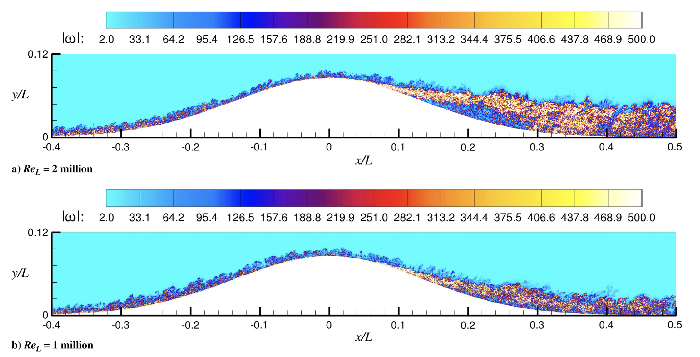

Public Access (formerly Langley Research Center)Turbulence Modeling Resource |
DNS: Boeing Gaussian Bump at Two Reynolds Numbers
Return to: Data from DNS - Intro Page
Return to: Turbulence Modeling Resource Home PageThe data on this page were provided by Ali Uzun.
These DNS cases use the so-called "Boeing Speed Bump" geometry.
They were run using compressible direct numerical simulation (DNS) codes.
This is a 2-D "slice" of the full experimental configuration, documented on the page:
Exp: Smooth Body Separation Experiment (SBSE) - Boeing Gaussian Bump with Error Function Shoulders.
These DNS results are at two Reynolds numbers of 2 million and 1 million based on width of the experimental model (L),
and have been documented in the following publications:

DNS data are provided below.
Return to: Data from DNS - Intro Page
Page Curators: Christopher Rumsey,
Ethan Vogel,
Clark Pederson
Last Updated: 01/24/2024